The planner that watches the whole board, offers only designs that are actually completable, and repairs damage you did not mean to do.
Wiring an 8088 to a memory chip is twenty-odd wires of pure ceremony: latch the multiplexed address,
decode a chip select, qualify the strobes. The planner does that ceremony for you — but it is careful
about when it speaks.
The rule is simple: it only ever offers designs that can be completed right now.
After every placement it re-examines the entire board and enumerates what has become possible, with the
new part as the subject or as the missing piece something else was waiting for. If nothing is possible,
it says nothing — it whispers in the hint bar instead of interrupting you with a dialog that leads
nowhere.
Whispers
A whisper is the hint bar telling you what part would unlock the board. It never
interrupts, never steals focus, and disappears the moment it stops being true.
A whisper, not a popup — Parts that cannot be wired yet never interrupt you. The hint bar whispers what is missing — here, that a CPU would unlock every one of these chips.
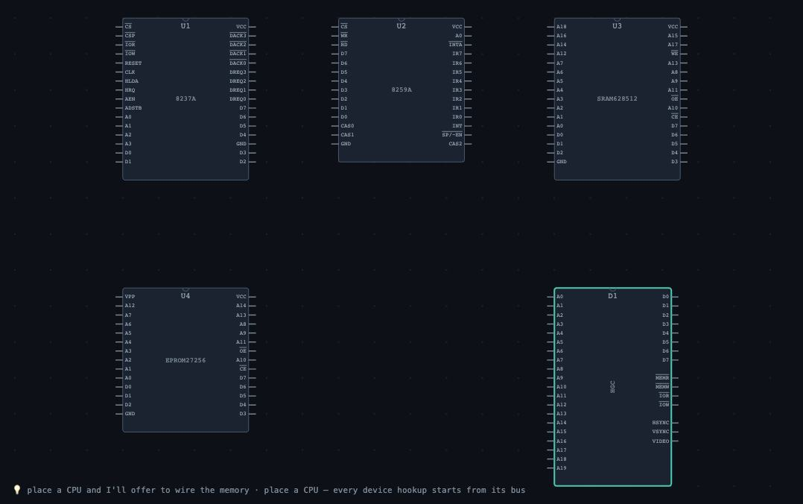
Five orphaned parts — Nothing is wired and nothing is nagging. The planner is watching the board and waiting for the piece that makes a design possible.The whisper follows the board — Adding a CPU changes the whisper: now the one missing part is the clock generator.
Clocking a CPU
Clocking is the first real decision on any board, so it gets a proper dialog:
which CPUs to clock, and for each one minimum mode (simple direct bus signals, the
classic kit arrangement) or maximum mode (which creates and wires an 8288 bus
controller and straps MN/~MX low — the IBM PC arrangement).
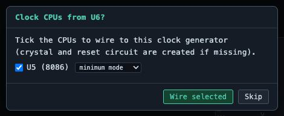
Clock CPUs — the checklist — The 8284A arrives and the planner offers every CPU it can clock: a checkbox each, and a per-CPU choice of minimum or maximum mode.Minimum or maximum mode — Maximum mode straps MN/~MX low, creates an 8288 bus controller and wires the status lines — the IBM PC arrangement.
Completing the board
The moment a CPU comes alive, everything that was waiting for a bus becomes
possible at once. Rather than twenty separate popups, you get one consolidated dialog listing every
chip that can be wired now, each with a checkbox and — where there is a choice — a dropdown. The batch
runs in dependency order, so a floppy controller wired after the interrupt controller automatically
picks up IRQ 6 and DMA channel 2. The whole batch is a single undo step.
You can summon the same dialog at any time with ⚡ complete.
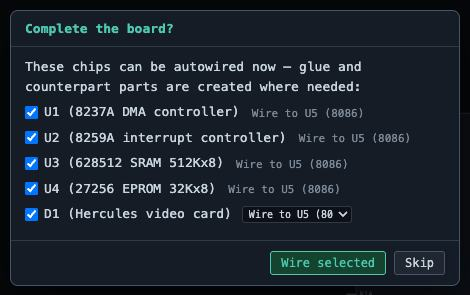
Complete the board? — The moment a CPU comes alive, every chip that can now be wired is offered at once — glue chips and counterpart parts created where needed, in dependency order.
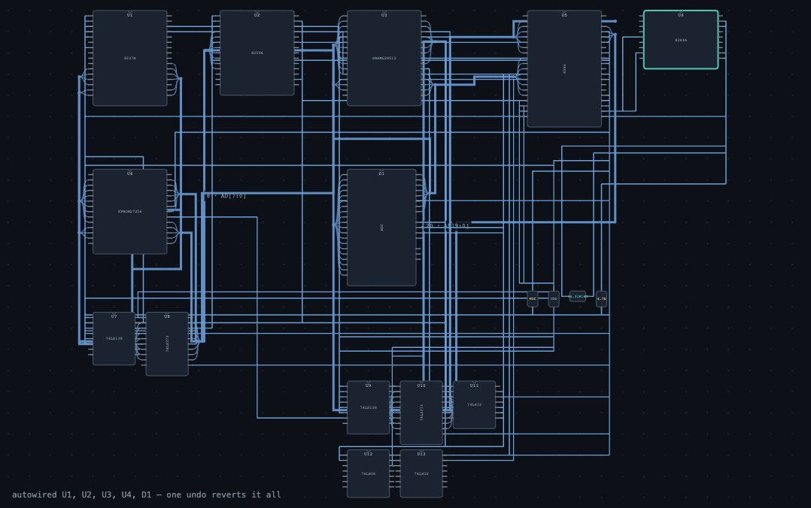
One click later — Address latches, decoders and qualified strobes synthesized; every device on its own IO window. The whole batch is one undo step.What just happened — The hint bar names every chip that was wired and reminds you that a single undo reverts the entire batch.
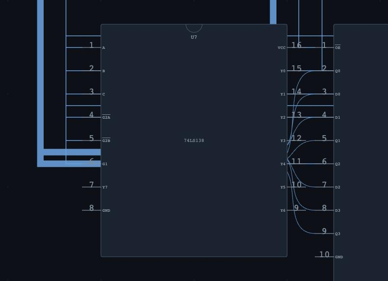
U7 — synthesized glue — The planner created this 74LS138 and wired it. Everything it adds is an ordinary component with ordinary wires: inspectable, checkable and editable.
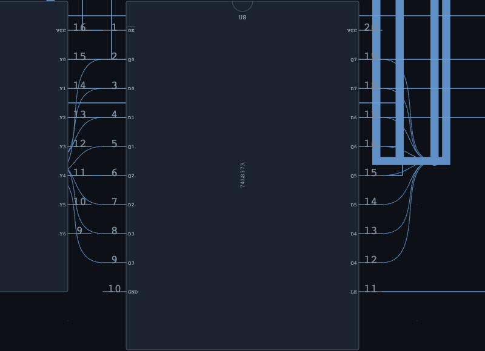
U8 — synthesized glue — The planner created this 74LS373 and wired it. Everything it adds is an ordinary component with ordinary wires: inspectable, checkable and editable.
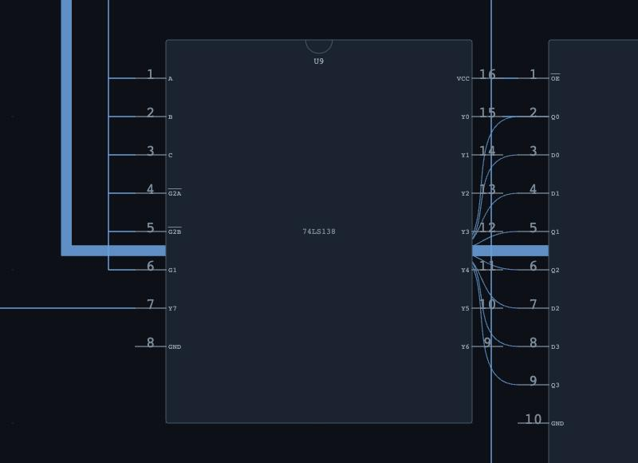
U9 — synthesized glue — The planner created this 74LS138 and wired it. Everything it adds is an ordinary component with ordinary wires: inspectable, checkable and editable.
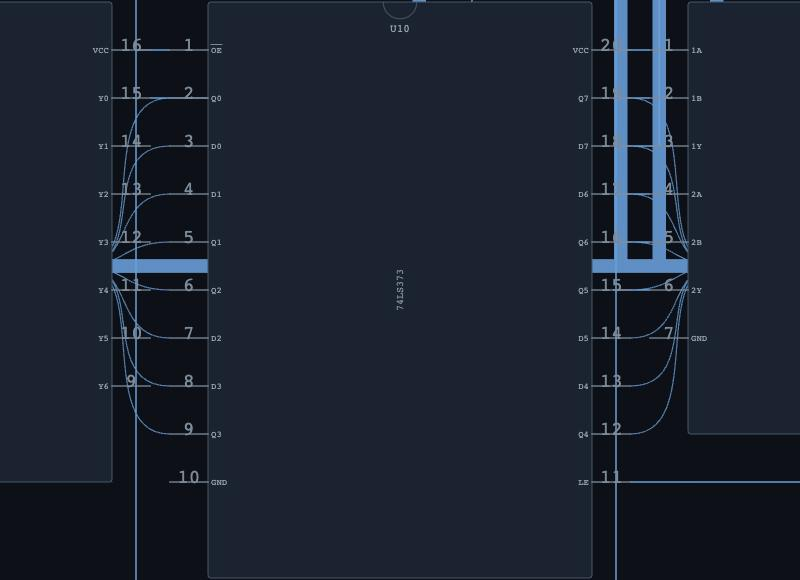
U10 — synthesized glue — The planner created this 74LS373 and wired it. Everything it adds is an ordinary component with ordinary wires: inspectable, checkable and editable.
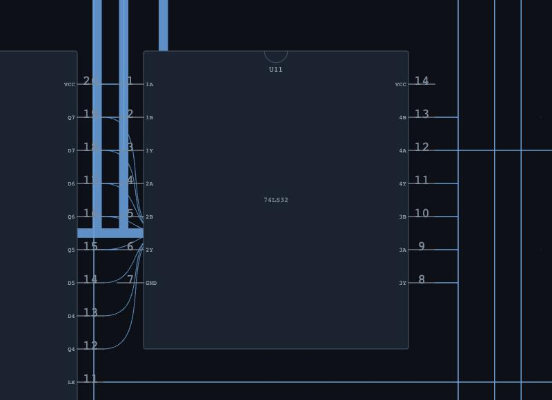
U11 — synthesized glue — The planner created this 74LS32 and wired it. Everything it adds is an ordinary component with ordinary wires: inspectable, checkable and editable.
Repair
Delete one lane of a live bus and the hint bar says so immediately — seven eighths of a
data bus is nobody's intention. Press ⚡ complete and the board is scanned for damage
by cloning it, re-running each chip's own hookup on the clone, and diffing: the wires it would add
are exactly the ones missing. Damage that looks accidental arrives pre-ticked; whole connections
you removed on purpose are offered unticked, because you may have meant it.
A snipped bus lane is noticed — Delete one lane of a live bus and the hint bar says so immediately — seven eighths of a data bus is nobody's intention.
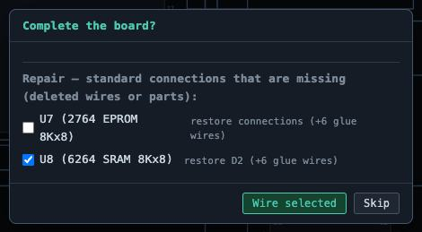
⚡ complete offers the repair — The board is scanned by cloning it, re-running each chip's own hookup on the clone, and diffing — the wires it would add are exactly the ones missing. Accidental-looking damage arrives pre-ticked.
Exact addresses
When "somewhere in this 128K window" is not good enough, the range calculator
synthesizes an exact decoder for a base address you choose — then proves it by re-probing the
netlist and reporting where the chip actually answers.
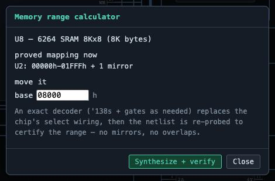
The range calculator — It first shows where the chip answers right now, mirrors included. Type the base address you want and it synthesizes a decoder to put it exactly there.
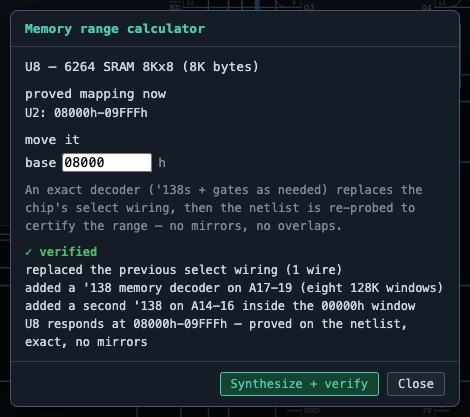
Proved, not promised — The result is verified by re-probing the netlist through the real decode gates: the green line is a measurement, not a calculation.
Design checks
Strict violations block the simulation before it starts; weak ones are warnings you
can run with. Every check comes with an explanation of what a bench technician would see.
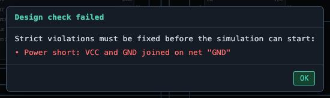
The design check stops you — Strict violations — a VCC/GND short, two outputs fighting, a missing required pin — block the simulation and are explained before anything runs.
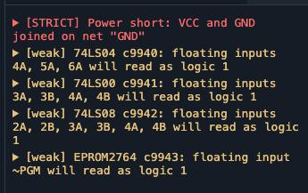
The Checks panel — Every check, strict and advisory, each expandable into an explanation of what a bench technician would see.
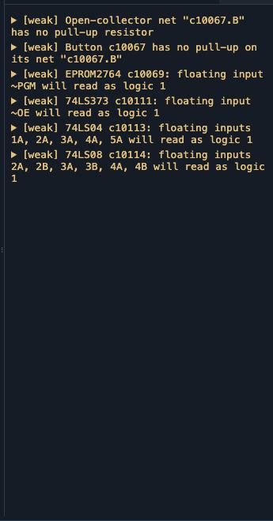
The repair lab — One shipped board is deliberately broken in two ways that a scope would find and a schematic would not. The checks tell you exactly what a technician would notice.